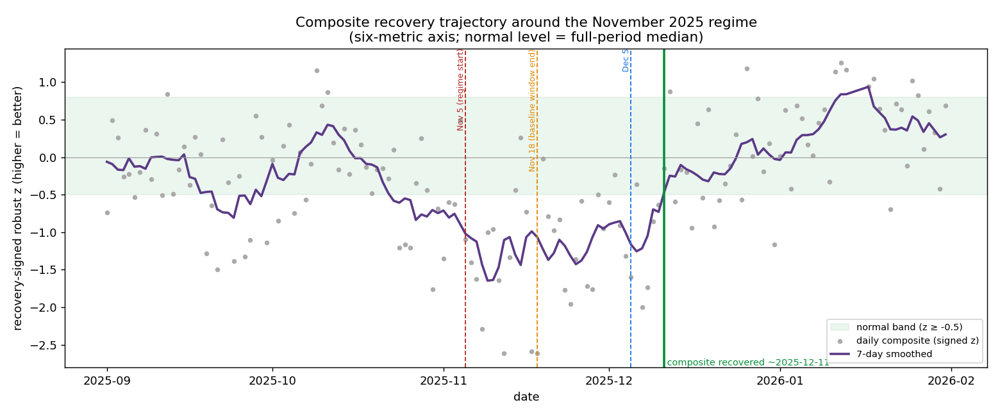
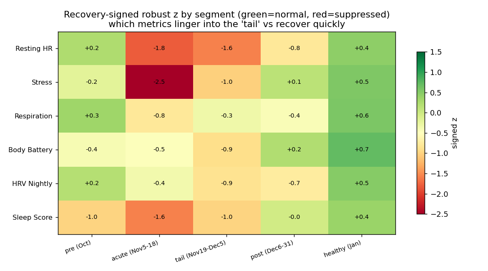
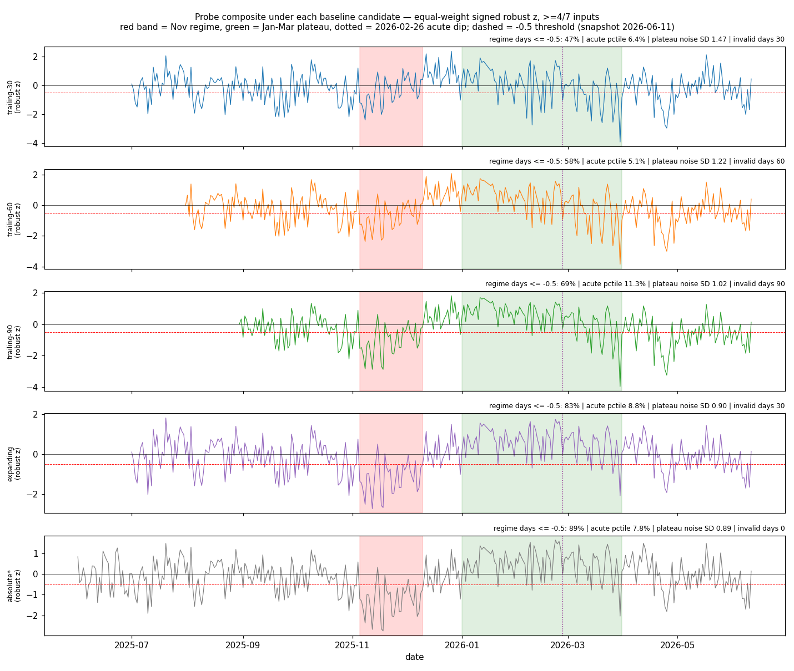
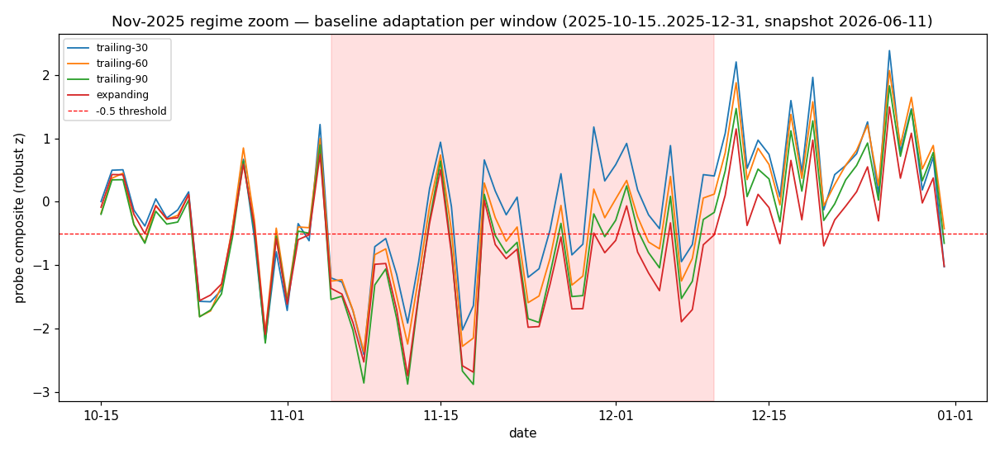
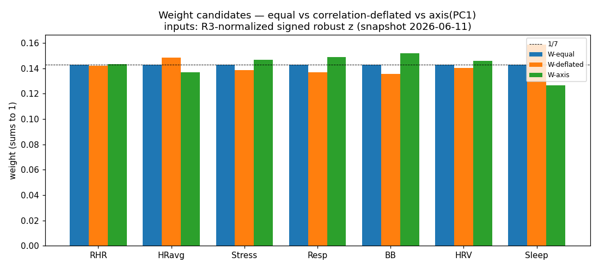
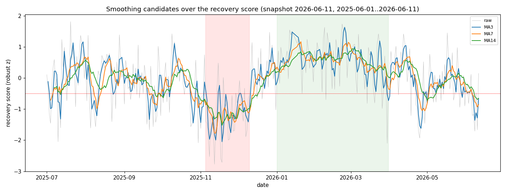
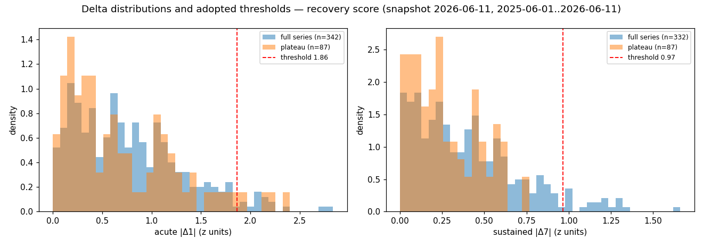
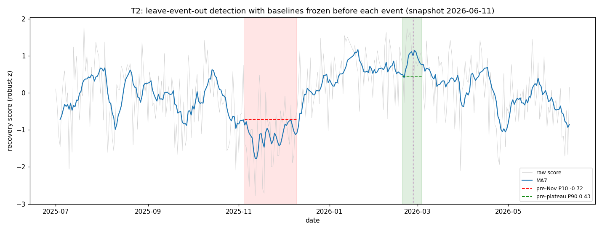
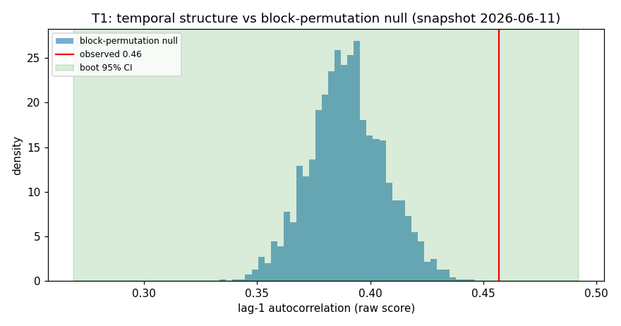
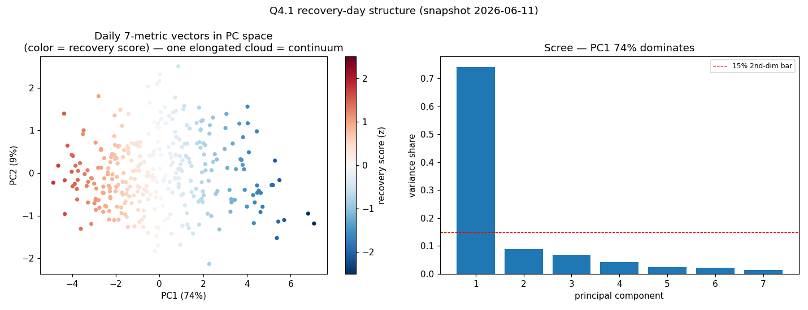

One number summarizing the seven-metric recovery axis — but only if it earns
trust. It has to catch the year’s one severe event, normalize against a moving baseline, weight
its inputs defensibly, smooth honestly, flag only real change, and pass tests registered before
the data was looked at. This is that chain, decision by decision.
The event the score must catch
Every design choice below is judged against one yardstick: does it correctly register the
November 2025 low-recovery regime — the only severe, sustained episode in the dataset?
confident
The November crash is a five-week, whole-body event.
Not the two-week “worst fortnight” it first looked like — the composite stays
below its normal band from ~Nov 5 to ~Dec 11. Every recovery metric is suppressed together,
which is exactly why a single composite is the right instrument: no one metric tells
the whole story, but they all move as one.

The November low-recovery regime. Composite recovery score (six-metric
robust-z), Sep 2025 – Jan 2026; the smoothed line sits below the normal band (z ≥ −0.5) for
~5 weeks — far longer than the Nov 5–18 worst-fortnight (the soft boundary mid-regime).

Why one composite. Per-metric recovery-signed z by regime segment: stress
crashes first (acute −2.5) and recovers first; HRV and body battery bottom out in the
tail; resting HR stays red into December — slowest to return.Evidence & stats run · nov-regime-extent + leadlag-generalize
Composite trajectory
acute (Nov 5–18) −1.4 → tail (Nov 19–Dec 5) −1.0 → post −0.3 → Jan +0.6
Back in normal band
~2025-12-11
Per-metric return
Body Battery Dec 9 · Stress/Resp/Sleep Dec 11 · HRV Dec 14 · Resting HR Dec 22 (last)
Provisional — does not generalize. The “stress leads, resting HR
lags” phase order appears only in this one severe episode. Of the year’s five low-recovery
dips, the other four (composite −0.69 to −0.96) trough synchronously. Treat the
lead-lag as a feature of severe sustained episodes only — and with n=1, even that is
provisional.
Normalize against your whole history
The single most counterintuitive decision — and the one most likely to be “simplified” into
a bug later.
confident
Use an expanding personal baseline — never a trailing window.
A trailing 30–60 day baseline absorbs a sustained regime: within a
couple of weeks its rolling median has crept down onto the crash values, so the score quietly
recenters mid-event — then overshoots high once the regime ends. An expanding (eventually
~365-day-capped) personal history is the only candidate that holds the crash down.

Trailing baselines fail the regime test. Share of November-regime days
correctly scored as suppressed: trailing-30 47%, -60 58%, -90 69% (all
below the 70% bar) vs expanding 83%. The shorter the window, the more it absorbs the
event it should flag.

The mechanism (Oct–Dec zoom). Inside the regime the trailing-30 score is
shallowest (its baseline already absorbed the regime); right after it, trailing-30
overshoots highest (~+2). The expanding baseline stays correctly deep throughout.
# Per-metric normalization — expanding personal robust-z
z(x, day) = ( x − median(prior_days) ) / ( 1.4826 · MAD(prior_days) )
# current day excluded · ≥ 30 prior present days required
composite = weighted mean over ≥ 5 of 7 available inputs # degraded-confidence flag below 7
Evidence & stats run · recovery-normalization-baseline
expanding wins under all 7 leave-one-metric-out variants
Provisional on the selection. One severe regime in-sample, and
the registered acute criterion failed every candidate (even hindsight caps at 89%),
so expanding was chosen on the fidelity + tie-breaks rather than a clean pass. The
trailing-fails result itself is arithmetic, not luck.
Weight the inputs
A natural worry — “are we double-counting the correlated metrics?” — turns out to barely
matter, precisely because the axis is so dominant.
confident
Weighting is practically immaterial — and that’s a feature.
Equal, correlation-deflated, and PC1 weightings produce near-identical
daily scores (Spearman ≥ 0.9996). We adopt the correlation-deflated weights — the only scheme
with an explicit double-counting defense — and they land essentially at equal (1/7 ≈ 0.143).

Three weighting schemes, one answer. Equal, deflated, and PC1 weight
vectors all hug the 1/7 = 0.143 line (full spread only 0.126–0.159). The choice does not move
the score. n=343.
no metric weight > 0.16, no pole > 57%; composite correlates ≥ 0.93 with each pole-only sub-composite
Smooth the headline
confident
A seeded 7-day moving average is the knee — no transform needed.
The raw score is already symmetric (skew −0.42), so a plain mean-based smoother
is valid. A 7-day window is the sweet spot: it removes plateau jitter without delaying
regime onset or flattening the crash. MA3 stays jagged; MA14 under-reads the November trough.

Choosing the window. Raw score (grey) vs MA3 / MA7 / MA14. MA7 tracks the
November trough and the Jan–Mar plateau cleanly; MA3 is still noisy, MA14 sits visibly
shallower at the crash.Evidence & stats run · recovery-score-smoothing-spec
MA7 trough −1.77 = the deepest 7-day mean (0% attenuation); MA14 loses 14%
Left-edge seed
seed with W−1 = 6 prior days (_MA_SEED_DAYS); skipping it errs up to 0.12 z on the first 6 points
Flag only real change
confident
A change is “meaningful” at sustained |Δ7| ≥ 0.97 z.
The default badge compares this week’s mean to the prior week’s. Its threshold
is set so it almost never fires inside a calm plateau, yet catches the regime within a week —
and deliberately ignores single-night noise. A secondary acute threshold (|Δ1| ≥ 1.86 z)
covers genuine one-day shocks.

Setting the bar. Acute |Δ1| and sustained |Δ7| distributions (z-units),
full series (blue) vs calm Jan–Mar plateau (orange). The 0.97 line sits beyond the entire
plateau Δ7 spread yet still catches the regime tail.
# Meaningful-change badges (z-units; rescale if the score is ever displayed 0–100)
Δ1(D) = score(D) − score(D−1) # acute
Δ7(D) = mean(score, D−6..D) − mean(score, D−13..D−7) # sustained (default)
badge if |Δ7| ≥ 0.97(default) or |Δ1| ≥ 1.86(secondary)
Evidence & stats run · recovery-score-meaningful-change
Threshold derivation
T7 = 0.97 z (full-series 1.4826×MAD of Δ7); T1 = 1.86 z (plateau p95)
Stable-window false positives
acute 5.7% / sustained 0.0% (bar ≤ 7%)
Regime onset flagged
day 8 of the regime (2025-11-13)
Badge frequency
~9.9% of days (≈ 3/month)
Single-night discipline
the 2026-02-26 acute dip correctly does not badge (Δ1 −1.20 vs −1.86) — single nights belong in drill-down, not the headline
Validate before shipping
Three tests, registered in advance, against being fooled by a score that merely looks
plausible.
confident
It passed all three pre-registered validation tests.
T1 — the score has real temporal structure, not noise. T2 — with baselines
frozen the day before each event, it still detects the November crash and the February
peak. T3 — it stays stable on a genuinely clean April–June holdout that postdates every
parameter choice.

T2 — leave-event-out. With baselines frozen before each event, MA7 stays
below the pre-November P10 for 36 straight days and rises above the pre-plateau P90 on
93% of February best-window days — it detects events it was never tuned on.

T1 — real structure, not noise. The score’s lag-1 autocorrelation (0.46)
sits clearly right of a 7-day-block-permutation null (mean 0.39), p < 1e-4.Evidence & stats run · recovery-score-validation
T1 temporal structure
raw lag-1 AC 0.457, CI [0.269, 0.492] > null mean 0.390 at p<1e-4
T2 frozen-event response
36 consecutive days below pre-Nov P10 (−0.72); 93% of Feb window above pre-plateau P90 (+0.43); 2026-02-26 raw Δ1 −1.20 (bottom 9%) but MA7 only −0.11
T3 clean holdout (Apr+)
lag-1 AC 0.377 vs design 0.412 (|Δ| 0.035); Δ7 flag rate a sane 8.3% (n=72)
Caveat. Events are n-of-1 (one severe regime, one plateau, one
acute dip, one holdout softening), and much of the lag-1 persistence is sub-weekly — the
scale the MA7 deliberately smooths.
One last temptation: “recovery states”
confident
Recovery is a continuum — there are no hidden archetypes.
It’s tempting to cluster days into named “recovery types.” But the seven-metric
daily structure is ~1-dimensional: clusters are stable only because they’re slices of the one
recovery score, not genuine types. A “state” label should be a coarse score band × trend
direction — not an invented physiological archetype.

One cloud, not clusters. 378 days form a single elongated cloud with a
smooth low→high recovery gradient (left); PC1 alone explains 74% of variance with PC2
(9%) below the 15% second-dimension bar (right).Evidence & stats run · recovery-day-states
Dimensionality
PC1 74.1%, PC2 8.8% (below the 15% bar)
No natural k
silhouette declines monotonically k2 0.39 → k6 0.20, no knee
Clusters are score slices
PC1-tertiles reproduce the k=3 clustering 73%; split-half ARI 0.72 / 0.64
Banner rule. a coarse score band (suppressed / typical / strong vs personal
baseline) × Δ7 trend (improving / steady / declining) — no invented archetypes. Consistent
with the HRV principle: read level and trend, don’t threshold a continuum into modes.
What shipped
The recovery score contract, end to end:
Inputs — seven-metric recovery axis (RHR, HR avg, stress, respiration, body battery, HRV, sleep), recovery-signed, renormalized per day over ≥5/7 available.
Normalization — expanding personal robust-z (median ± 1.4826·MAD of prior days, ≥30 prior). Never a trailing 1–2 month window.
Weights — correlation-deflated, which land ≈ equal (1/7); the choice is immaterial.
Smoothing — seeded trailing 7-day moving average; no score-level transform.
Change badge — sustained |Δ7| ≥ 0.97 z (default), acute |Δ1| ≥ 1.86 z (secondary).